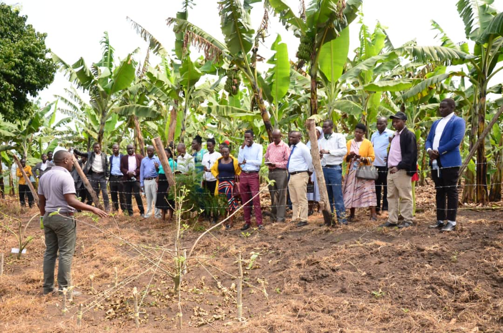
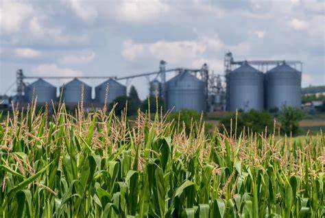

Empowering Farmers for a Brighter Future. Transforming subsistence farming into sustainable agribusiness.
Masaka Technology Transfer Initiative (MTTI) is a Christ-centered, farmer-focused, non-profit organization based in Kyanamukaaka, Masaka District, Uganda. We empower rural smallholder farmers with practical knowledge, skills, tools, and financial literacy to transition from subsistence to sustainable agribusiness.
Through partnerships, training, and innovation, MTTI promotes sustainable farming practices that enhance income and food security.

To increase rural incomes and household food and nutrition security in line with Uganda's national agricultural development strategies.
Promoting climate-smart and conservation farming methods that enhance productivity and protect the environment.
Equipping farmers with financial management skills and helping them form saving groups to improve livelihoods.
.jpeg)
Supporting farmers in agro-processing and packaging to increase market value and reduce post-harvest losses.
.jpeg)
Workshops & Trainings
Conducting farmer field days, community trainings, and outreach sessions.
Offering customized agribusiness training to organizations and institutions.
Building capacity in modern farming, agribusiness, and community development.
Training communities on disaster risk reduction.
Building resilience to climate change and environmental hazards.
Coordinating local-level emergency response actions.
Supporting formation and leadership of farmer groups.
Strengthening community-based organizations and cooperatives.
Empowering groups to become self-sustaining.